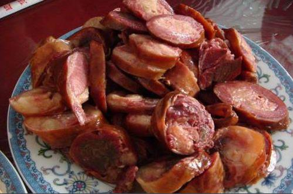
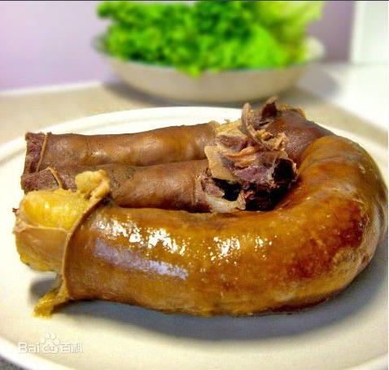

基本介绍
新疆伊犁的熏马肉和熏马肠是哈萨克族过冬必备的食物，每年11月底到12月份，是哈萨克族牧民熏肉的旺季。他们在这个时候，要挑选一些膘肥体壮的牛、马、羊宰杀后供过冬食用。为了使这些肉能较长时间的保存，他们采用了多年的方法--熏。熏肉时，先将肉剁成块，撒上盐，搭在木架上，四周是土块墙或是用其它东西遮挡一下，下面用松枝柴烟来熏，直到熏干，即成熏肉。还有一种熏羊肉的方法十分有趣，将羊宰杀后，将内脏掏空，烧掉皮上的毛，皮连肉一起剁成块，撤些盐，用熏陶的方法熏干。连皮一起熏的肉，可以保存较长时间，直到翌年的六七月份也不会变质，哈萨克族牧民最拿手的要数做马肠子了，他们挑选膘肥体壮的马宰杀后，取其马肠，洗净，按马的肋条切成条肉，连同肋骨撤上盐、胡椒粉等佐料，灌进3尺多长的马肠内，两头扎紧，挂在屋里风干，一个月左右即成。
除用肋骨肉灌肠外，还用碎肉和块肉来灌肠，也有用熏的方法来做马肠子。还有一种腊肉，是将牛羊肉上撤些盐，灌进马肠内，两头扎紧口，吊起来凉干即 成。哈萨克族的马肠和腊肉脂肪丰富，但油而不腻，瘦肥分明，不仅色悦目，而且营养价值很高，并具有特殊的风味。隆冬季节来到牧区，正是哈萨克族牧民显示他们烹饪技术的时候，这时若去牧区准叫你饱尝口福。
因为这个时候是牛羊马最肥的时候，也是最好吃的时候，也只有每年11月底到12月份才有得卖熏马肉和熏马肠，马肠和马肉脂肪丰富，但油而不腻，瘦肥分明，不仅色悦目，而且营养价值很高。马肉都是连着大骨头的，马肠是用肋骨和马油灌进去的，而且还连着皮，很有韧性，绝对让你“一吃就忘不了”。
制作方法
1、切丝洋葱覆盖肉片上。
2、胡椒，生辣子粉，盐、混合后干沾。
3、蒜泥香油沾汁。
4、熏马肠和土豆条烂炖。
5、熏马肠抓饭。
6、煮的汤做揪片子，汤面条。
